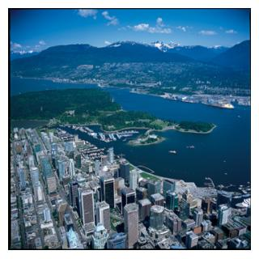
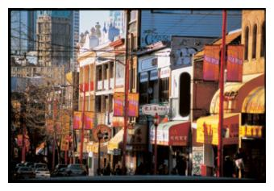
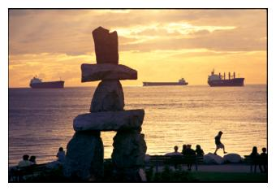

Information and images from www.tourismvancouver.com

Vancouver is a dynamic, multicultural city set in a spectacular natural environment. Based on 2001 Census, the population of the City of Vancouver is estimated at 582,045.
The City of Vancouver is located on the mainland of North America, in the south west corner of British Columbia, which is the westernmost of Canada's ten provinces. It is on the western-most part of a peninsula that is a major extension of the Fraser River's delta. The delta juts into a part of the Pacific Ocean, separating Vancouver Island from the mainland, called the Strait of Georgia. The southern boundary of the City is the North Arm of the Fraser River, one of the largest rivers entering the Pacific.
Thirty-eight kilometres (24 miles) south of downtown Vancouver is the Canada-US boundary.
Across the Strait of Georgia and 96 km (60 miles) to the south-west is British Columbia's capital city of Victoria, on the southern tip of Vancouver Island. Vancouver is almost exactly halfway between Western Europe and the Asia Pacific countries.
Click here for Vancouver maps.

Warmed by Pacific Ocean currents and protected by a range of mountains, Vancouver enjoys mild temperatures year-round. From high 70's Fahrenheit (low 20's Celsius) in summer to a mild mid 40's Fahrenheit (0 to 5 Celsius) in winter, the climate is always hospitable.
Autumn on the coast is very mild with summer-like weather often stretching into October. By November, the air turns crisp in the mornings and leaves start to fall. Bring warm, waterproof clothing if visiting at this time of year, and expect to see some spectacular fall foliage!
| Month | Celsius | Fahrenheit |
|---|---|---|
| July | 23 | 74 |
| August | 23 | 74 |
| September | 18 | 65 |
| October | 14 | 58 |
| November | 9 | 48 |
| December | 6 | 43 |
We recommend all visitors use Canadian currency when traveling within Canada. Some hotels, merchants, restaurants and suppliers accept US or other foreign currency at a pre-determined rate, which may differ from the daily rate posted by financial institutions. View current exchange rates.

There are three levels of taxation that affect visitors to Vancouver. There's a 10% tax charged on accommodation and liquor. For most other goods and services, there is a 7.5% provincial sales tax (PST) and the 7% federal goods and services tax (GST.)
Visitors to Vancouver from outside the country can apply to have the GST returned to them when they leave the country, but they must keep purchase receipts as proof of the amount paid. For more information, click here.
Canada follows the International Metric System. Temperatures, rainfall measures, distance, weights, velocity are expressed in metric units. Distance is measured in kilometres.
Outlets and voltage (110 volts) are the same as in the United States. The frequency of electrical current in Canada is 60 Hz.